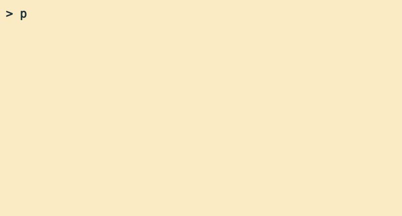

| Week | Time | Location | Presenter | Lesson subject | Helpers | |
|---|---|---|---|---|---|---|
| Previous | ||||||
| Tue, Jan 13, 2026 | 3 | 10:00-12:00 | Hjørnerummet, A401-109 | Zheer | Introduction and planning of format | - |
| Tue, Jan 27, 2026 | 5 | 10:00-11:30 | Hjørnerummet, A401-109 | Zheer | How to ask for help: The minimal reproducible example and making simulated data | - |
| Planned | ||||||
| Wed, Feb 18, 2026 | 7 | 10:00-11:30 | Hjørnerummet, A401-109 | Zheer | Prevention and diagnosis of errors in R | - |
| Tue, Feb 24, 2026 | 9 | 10:00-11:30 | Hjørnerummet, A401-109 | Zheer | Types of data (object, classes) | - |
| Tue, Mar 10, 2026 | 11 | 10:00-11:30 | Hjørnerummet, A401-109 | Zheer | Writing functions instead of copy/paste | - |
| Tue, Mar 24, 2026 | 13 | 10:00-11:30 | Hjørnerummet, A401-109 | Zheer | Loops, recursion, parallelisation | - |
| Tue, Apr 7, 2026 | 15 | 10:00-11:30 | Hjørnerummet, A401-109 | Zheer | Paradigms: Base R vs. Tidyverse vs. data.table | - |
| Tue, Apr 21, 2026 | 17 | 10:00-11:30 | Hjørnerummet, A401-109 | Zheer | More tidyverse | - |
| Tue, May 5, 2026 | 19 | 10:00-11:30 | Hjørnerummet, A401-109 | Zheer | Handling many packages—and cross-package workflows | - |
| Tue, May 19, 2026 | 21 | 10:00-11:30 | Hjørnerummet, A401-109 | Zheer | Moving between R and Stata | - |
| Tue, Jun 2, 2026 | 23 | 10:00-11:30 | Hjørnerummet, A401-109 | Zheer | Markdown basics: Using Quarto and Rmarkdown | - |
| Tue, Jun 16, 2026 | 25 | 10:00-11:30 | Hjørnerummet, A401-109 | Zheer | Database formats (parquet and more) | - |
General info

Welcome to the Coding Café at the Steno Diabetes Center Aarhus (SDCA).
We’re a bi-weekly open “café” for anyone working at SDCA, Aarhus University Hospital, Department of Public Health, Department of Clinical Medicine and Department of Biomedicine, Aarhus University to go and get assistance with coding in R. The only prerequisite so far is that you have had some type of introduction to R, preferably through a course such as this offered by the Danish Diabetes and Endocrinology Academy or similar introductory courses.
The sessions are open and anyone can join in and out at anytime during the allotted time. There will be a 10-15 minue presentation at the beginning, tackling a concept in R or specific packages and workflows that are nice to know, and 1-2 experience instructors will subsequently help with specific challenges and questions. We also highly encourage the participants to interact with each other - maybe there is someone in the group that has the solution to your problem.
Schedule and themes
Other planned themes are:
- Nice to know packages (e.g., {gtsummary} {Epi} {Hmisc})
- Matching and Weighting (using MatchIt and WeightIt)
- Missing data: different options and packages for it, including combining MICE with MatchThem/WeightThem
- Preregistration as a means to improved workflows in R